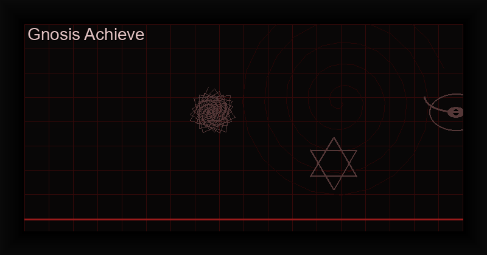

What is Gnosis? How to Achieve Gnosis in Chaos Magick — Complete Guide
If chaos magick has a secret engine, it is gnosis. Every sigil fired, every servitor launched, every paradigm shifted — all of it depends on one thing: the ability to enter an altered state of consciousness at will. Without gnosis, you are drawing pictures and reciting words. With it, you are rewriting reality.
But what is gnosis exactly? How do you know when you have achieved it? And most importantly, how to achieve gnosis reliably, every time, regardless of your experience level?
This guide answers those questions completely. You will learn the history of gnosis in chaos magick, the two fundamental types, ten concrete methods to achieve it, the signs that tell you it is working, the mistakes that sabotage your practice, and exactly how gnosis relates to sigil charging. By the end, you will understand how to enter gnosis with confidence and precision.
What is Gnosis? Definition and Origin in Chaos Magick
The word gnosis comes from the Greek γνώσις (gnōsis), meaning "knowledge" or "insight." In the context of chaos magick, it refers specifically to an altered state of consciousness in which the analytical mind is temporarily suspended. In this state, the critical faculty — the part of your mind that doubts, judges, rationalizes, and categorizes — goes quiet. What remains is pure awareness, unfiltered and receptive.
This is the state where magic happens. When your conscious mind stops interfering, your subconscious becomes directly accessible. Intentions planted in this state bypass your internal censor and take root in the deepest layers of your psyche, where they work toward manifestation without resistance.
The concept of gnosis was not invented by chaos magick — it appears in mystical traditions worldwide under different names: samadhi in yoga, satori in Zen, ecstasy in Sufi practice, the void in ceremonial magick, flow state in modern psychology. What chaos magick did was understand gnosis not as a spiritual goal but as a technology — a repeatable, trainable mental state that serves as the engine of all magical operations.
Austin Osman Spare: The Grandfather of Gnostic Magic
The figure who first connected gnosis to sigil magic was Austin Osman Spare (1886-1956), the British artist and occultist whose work forms the foundation of modern chaos magick. Spare discovered that the critical faculty of the conscious mind blocks direct communication with the subconscious. To bypass it, he developed two complementary techniques.
First, the sigil — a symbol that encodes an intention in a form the conscious mind cannot easily parse. The sigil sneaks past the critical faculty by being abstract and non-verbal. Second, gnosis — the state that opens the door. Spare called this state "the neither-neither" or "the death posture," a condition of being between thoughts, between identities, between worlds.
Spare's primary method for achieving gnosis was sexual: the moment of orgasm creates a natural suspension of the critical faculty. He also used physical exhaustion, breath control, and what he called "gnostic exhaustion" — pushing the body to its limits until the mind surrenders. His book The Book of Pleasure (Self-Love): The Psychology of Ecstasy (1913) remains the foundational text on gnosis and sigil magic.
Peter Carroll: The Systematizer
Where Spare was intuitive and artistic, Peter J. Carroll (b. 1953) was analytical and systematic. In Liber Null and Psychonaut (1978-1982), Carroll codified gnosis into the framework that chaos magicians use today. He introduced the critical distinction between inhibitory and excitatory gnosis, gave precise instructions for achieving both, and placed gnosis at the center of all magical theory.
Carroll defined magic as "the art of causing change in accordance with will." The mechanism, he explained, is simple: the subconscious accepts suggestions implanted during gnosis and works to manifest them. Every magical operation — sigil charging, servitor creation, divination, evocation — depends on this single principle. Master gnosis, and you master magic.
Carroll also warned about the dangers of gnosis: psychological instability, obsession, and burnout. He emphasized that gnosis is a tool, not a lifestyle. Enter the state, do the work, and return to normal consciousness. The mark of a skilled practitioner is not how deep they can go but how cleanly they can enter and exit.
The Two Types of Gnosis: Inhibitory vs. Excitatory
Carroll's most important contribution to gnosis theory was the classification into two fundamental types. Every method of achieving gnosis falls into one of these categories. Understanding both allows you to choose the right approach for your personality, circumstances, and goals.
Inhibitory Gnosis (Stillness Path)
Inhibitory gnosis works by reducing sensory input until the mind has nothing left to process and falls silent. This is the path of meditation, sensory deprivation, breath control, and fixed-gaze trance. The principle is simple: when you starve the mind of stimulation, it eventually stops demanding your attention.
Characteristics:
- Requires patience and stillness
- Takes longer to achieve (10-30 minutes typically)
- Produces deeper, more sustainable states
- Lower risk of physical injury or overstimulation
- Easier to perform quietly and discreetly
- Harder for people with restless or anxious minds
Inhibitory gnosis is ideal for practitioners who already have a meditation practice, who need to work in quiet environments, or who prefer subtlety over intensity. It is also the safer option for daily practice, as it does not spike adrenaline or stress hormones.
Excitatory Gnosis (Overload Path)
Excitatory gnosis works by overwhelming the mind with input until it shuts down under the load. This is the path of dancing, drumming, hyperventilation, sexual arousal, physical exhaustion, and sensory overload. The principle is the opposite of the inhibitory path: flood the nervous system until it trips its own circuit breaker.
Characteristics:
- Requires physical energy and intensity
- Produces rapid results (seconds to a few minutes)
- Creates brief but extremely deep gnostic windows
- Higher risk of injury, overstimulation, or burnout
- More dramatic and cathartic
- Easier for people who struggle with stillness
Excitatory gnosis is ideal for practitioners with high energy levels, for group workings, for urgent magical operations that need immediate power, and for those who find meditation frustrating. It is the path of the shaman, the ecstatic, the dancer.
Which Path Should You Choose?
The answer depends on your temperament and circumstances. If you are naturally calm and disciplined, inhibitory gnosis will feel natural. If you are high-energy and restless, excitatory gnosis will be more effective. Most experienced practitioners learn to use both, switching between them based on their mood, environment, and magical goal.
There is no superior path. Both lead to the same destination. The only wrong choice is the one you do not practice because it is inconvenient. The best method is the one you will actually use.
Why Gnosis Is the Engine of All Chaos Magick
Every magical technique in chaos magick ultimately depends on gnosis. Here is why:
Sigil magic: A sigil is a drawing until it is charged. Charging means implanting the sigil's intention into the subconscious during gnosis. Without gnosis, no charging occurs. Without charging, no manifestation follows.
Servitor creation: A servitor is a sigil with instructions. It must be charged in gnosis and then programmed while the gnostic state persists. The depth of the gnosis determines the servitor's power and longevity.
Paradigm shifting: Adopting a temporary belief system requires the ability to suspend your default worldview. This suspension is a form of gnosis — you quiet the critical faculty that says "this isn't real" and fully enter the new paradigm.
Divination: Accurate divination requires the diviner to step out of their normal analytical mind and enter a receptive state. This is why the best readings happen in a light trance — a mild gnostic state.
Evocation: Contacting spirits, entities, or thought-forms requires a shift in consciousness. The evoker must enter a gnostic state to perceive and interact with the entity on its own terms.
Dream magic and astral projection: Both require the practitioner to maintain awareness while the body sleeps — a sophisticated gnostic technique that combines inhibitory and excitatory elements.
If you learn only one skill in chaos magick, make it gnosis. Everything else is elaboration.
10 Methods to Achieve Gnosis
Here are ten proven methods for achieving gnosis, drawn from chaos magick tradition, world spiritual practices, and modern innovations. Each method includes how to perform it, time required, difficulty level, and safety considerations.
1. Breathwork (Holotropic, Hyperventilation)
Breathwork is one of the fastest and most accessible gnosis methods. By altering your breathing rhythm, you directly change your brain chemistry and nervous system state. Rapid, deep breathing induces a state of lightheadedness, tingling, and altered perception that suppresses the critical faculty.
How to do it: Sit or lie down in a safe space. Take rapid, deep breaths through the mouth at a rate of approximately one breath per second. Do not pause between inhale and exhale — keep the cycle continuous. After 60-90 seconds, you will feel tingling in your extremities, lightheadedness, and a shift in perception. This is the gnostic window. Hold your breath for a few seconds, perform your magical work, then exhale slowly and ground.
Time required: 2-5 minutes
Difficulty: Beginner
Safety: Do not practice hyperventilation if you have epilepsy, high blood pressure, heart conditions, or are pregnant. Stop immediately if you feel faint, chest pain, or severe dizziness. A gentler alternative is the 4-7-8 breath: inhale for 4, hold for 7, exhale for 8 — repeat for 5-10 minutes.
2. Meditation (Void State, Single-Point Concentration)
Meditation is the foundational inhibitory gnosis technique. The goal is not relaxation but mental stillness — the complete cessation of internal monologue and discursive thought. In the void state, the mind becomes a blank screen onto which the sigil or intention can be projected.
How to do it: Sit in a comfortable position with your spine straight. Close your eyes and bring your attention to your breath. When thoughts arise, acknowledge them without engagement and return to the breath. After 10-20 minutes, a natural stillness may arise — a gap between thoughts. This gap is the gnostic window. Introduce your sigil or intention into this gap, hold it for a moment, then release it.
Time required: 15-30 minutes
Difficulty: Intermediate
Safety: Safe for everyone. Avoid meditating immediately after heavy meals or when you are extremely tired, as you may fall asleep rather than enter gnosis.
Single-point concentration alternative: Instead of emptying the mind, focus on a single object — a candle flame, a black dot on white paper, or your sigil itself. Stare without blinking for as long as possible. When your eyes water and your vision blurs, the analytical mind has been bypassed. This is a rapid and effective method for sigil charging specifically.
3. Sensory Deprivation (Float Tank, Dark Room)
Remove all sensory input, and the brain has no choice but to turn inward. In the absence of light, sound, touch, and temperature variation, the mind enters a hypnagogic state — the threshold between waking and sleeping — where imagery, insights, and gnosis arise naturally.
How to do it: Enter a completely dark and silent environment. Lie down and close your eyes. Earplugs and a blindfold can help in a normal room. After 10-20 minutes, you will notice spontaneous imagery and sensations (hypnagogia). This signals that the critical faculty is dissolving. Introduce your magical intention at this point. Do not try to control the experience — allow it to unfold.
Time required: 20-60 minutes
Difficulty: Advanced
Safety: Safe for most people, but sensory deprivation can be psychologically intense for individuals with anxiety disorders or claustrophobia. Float tanks are temperature-controlled and safe, but always follow the facility's guidelines. Never combine with drugs or alcohol.
4. Sensory Overload (Strobe Lights, Loud Music, Drumming)
The opposite approach: flood the senses until the conscious mind short-circuits. Intense rhythmic stimulation — strobe lights, loud drumming, or both combined — overwhelms the analytical faculty and produces a trance state. This is the method behind shamanic drumming and modern rave culture.
How to do it: Set up a strobe light (or use a phone app) in a dark room. Play loud, rhythmic music at 120-150 BPM. Place your sigil before you. Gaze at it as the strobe flashes. The flickering disrupts normal vision and cognition. When you feel disoriented, non-verbal, and detached from your body, you are in gnosis. Release the sigil and turn off all stimulation.
Time required: 5-15 minutes
Difficulty: Advanced
Safety: WARNING: Strobe lights can trigger seizures in people with photosensitive epilepsy. Do not use this method if you or anyone in your household has epilepsy. Loud music can damage hearing — use ear protection at high volumes. Stop immediately if you feel nauseous, panicked, or disoriented in a distressing way.
5. Physical Exhaustion (Dancing, Running, Yoga)
Push the body to its limits, and the mind follows. Intense physical activity burns through the mental chatter that keeps the analytical faculty active. When your body demands every ounce of your attention, the critical mind falls silent. This is the principle behind ecstatic dance, Sufi whirling, and yogic asana practice.
How to do it: Choose a repetitive physical activity that you can sustain for 20-40 minutes. Running, dancing, jumping jacks, burpees, or a vigorous yoga flow all work. The key is rhythmic, continuous movement. Do not stop until you reach a state of physical exhaustion where your mind goes blank. At that moment, stop moving and immediately perform your magical work. The post-exhaustion stillness is a potent gnostic window.
Time required: 20-40 minutes
Difficulty: Intermediate
Safety: Stay hydrated. Know your physical limits. Do not push through pain. This method is physically demanding and should only be attempted by people in reasonable physical condition. Always ground and rest afterward.
6. Sexual Gnosis (Solo or Partnered)
Spare's original method remains one of the most powerful gnosis techniques available. Sexual arousal concentrates the mind into a narrow channel of sensation, and the moment of orgasm or peak arousal creates a brief but profound suspension of the critical faculty. The sigil fired in this window carries maximum force.
How to do it (solo): Place your sigil where you can see it during arousal. Bring yourself to the edge of climax. In the final moments, fix your gaze on the sigil. At the moment of climax, release both physically and magically — let the sigil absorb the energy. Do not think about the intention; let the symbol carry it.
How to do it (partnered): Both partners should know the intention beforehand. Coordinate the moment of climax or peak arousal. One or both partners gaze at the sigil. The combined energy creates a powerful gnostic field.
Time required: Variable (depends on arousal cycle)
Difficulty: Beginner
Safety: Practice with consenting partners only. Solo practice is simpler and more controllable. Sexual gnosis can create strong emotional entanglements — use discernment with partnered work. This method is not recommended for practitioners who are processing sexual trauma.
7. Pain/Endurance (Holding Positions, Cold Exposure)
Controlled discomfort forces the mind into a sharp, focused state that bypasses normal cognition. When you hold an uncomfortable position or immerse yourself in cold water, your attention narrows to the immediate sensation. The internal monologue stops. This state is pure presence — and pure gnosis.
How to do it (posture): Stand with your arms extended horizontally, palms up, holding small weights or just maintaining the position. Hold it without moving. The burning sensation in your shoulders will escalate. When the discomfort peaks and your mind goes silent, introduce your sigil. Hold it for a few seconds, then lower your arms and release.
How to do it (cold exposure): Take a cold shower or an ice bath. The initial shock silences the mind instantly. Focus on your breath. After 1-3 minutes, your breathing will stabilize, and you will enter a state of calm alertness. This is the gnostic window. Perform your working and exit the cold gradually.
Time required: 3-15 minutes
Difficulty: Advanced
Safety: Cold exposure can be dangerous for people with heart conditions, high blood pressure, or circulatory disorders. Start with brief cold showers (30 seconds) and build tolerance over weeks. Never cold plunge alone. With posture holds, stop if you feel joint pain rather than muscle fatigue.
8. Fasting and Sleep Deprivation
Deprivation methods work by reducing the body's resources until the ego — the energy-hungry narrative self — cannot sustain itself. Without food or sleep, the usual mental structures weaken, and the subconscious rises to the surface. This is why vision quests traditionally involve fasting. However, these methods must be used with extreme caution.
How to do it (fasting): Skip one or two meals before your working (12-24 hours of fasting is sufficient). Drink water only. The mental clarity that comes after the initial hunger passes is the gnostic window. Perform your working in this state. Eat a light meal afterward.
How to do it (sleep deprivation): Stay awake for one full night. The next morning, you will enter a state of dreamlike consciousness — microsleeps, hypnagogic imagery, and a detached, floating sensation. This is a powerful but unstable gnostic state. Use it only for urgent workings.
Time required: 12-24 hours of fasting; 24-36 hours of sleep deprivation
Difficulty: Advanced
Safety: Do not combine fasting and sleep deprivation. Do not fast if you have diabetes, eating disorders, or are underweight. Do not practice sleep deprivation if you have a demanding job, drive heavy machinery, or have mental health conditions. These methods should be used sparingly — once a month at most. They are not sustainable for regular practice.
9. Chanting/Mantra Repetition
Repetitive vocalization creates a powerful trance state through rhythmic entrainment. The sound vibrations, combined with the mental focus required to maintain the repetition, override the analytical mind. This is one of the oldest gnosis methods in human history, found in every spiritual tradition.
How to do it: Choose a short phrase, a single word, or a nonsense syllable. "Aum," "Om," or a vowel-heavy sound works well. Repeat it aloud or mentally in a steady rhythm. Do not vary the pitch or speed. Continue for 10-20 minutes. At some point, the repetition will become automatic — you will no longer be "doing" it. This is the gnostic state. At this moment, introduce your sigil or intention, then cease the mantra and remain silent.
Time required: 10-20 minutes
Difficulty: Beginner
Safety: Safe for everyone. If you feel lightheaded, pause and breathe normally. Chanting at a moderate volume is less disruptive to neighbors than loud music or drumming.
10. Pharmacological Gnosis (Caffeine, Nicotine, Legal Substances)
Certain legal substances can facilitate gnosis by altering brain chemistry. This method should not be confused with recreational drug use. The approach here is strategic and minimal: use a substance to create a specific neurochemical state that supports gnosis, then perform the magical work.
Caffeine: A strong dose of caffeine (200-400mg) before a meditation session can create a state of heightened alertness combined with physical stillness — an "alert relaxation" that is ideal for inhibitory gnosis. The key is to sit still while the caffeine peaks, channeling the nervous energy into focus rather than fidgeting.
Nicotine: In low doses, nicotine produces a sharp but brief increase in focus and relaxation. Some practitioners use a small dose before breathwork or chanting. Nicotine should never be inhaled via smoking for health reasons — nicotine gum or patches offer cleaner delivery.
Herbal allies: Calming herbs like valerian, passionflower, or skullcap can deepen meditative states. Stimulating herbs like ginkgo or rhodiola can support excitatory methods. Always research dosage and contraindications before use.
Time required: Dependent on the substance and method
Difficulty: Advanced
Safety: This is the most controversial gnosis method. Only use legal, regulated substances. Never use illegal drugs. Always start with the lowest possible dose. Do not mix substances. Do not use substances as a crutch — the goal is to learn to achieve gnosis without external aids. If you have a history of substance abuse, avoid this method entirely.
Important: The best approach is to master at least three non-pharmacological methods before experimenting with substances. Gnosis is a skill of consciousness, not chemistry. Substances are training wheels at best.
How to Know You have Reached Gnosis: Signs and Symptoms
One of the most common questions from beginners is: "How do I know if I am in gnosis?" The answer is that gnosis is unmistakable once you have experienced it, but the first time can be confusing because it is unlike ordinary consciousness. Here are the signs to look for:
Loss of sense of time: You have no idea how long you have been practicing. Five minutes feels like an hour, or an hour feels like five minutes. The internal clock stops.
Loss of body awareness: You forget where your body ends and the environment begins. You may feel formless, floating, or expanded beyond your physical boundaries.
Cessation of internal monologue: The voice in your head stops. There is no self-talk, no judgment, no commentary. Just silence. If you notice you are not thinking, you are in gnosis.
Visual disturbances: You see patterns, colors, or lights behind your closed eyes. Hypnagogic imagery — abstract shapes, faces, landscapes — may appear spontaneously.
Emotional release: Laughter, tears, or intense emotions may surface without an obvious trigger. This is the subconscious releasing stored material.
Involuntary movements: Twitching, swaying, or small jerks of the body. This is the nervous system discharging tension.
Detachment from self: The sense of "I" becomes fuzzy. You observe your thoughts and feelings as if they belong to someone else. The egoic boundary softens.
Unity or connection: A feeling of being part of something larger — the universe, the room, the sigil itself. Boundaries between self and other dissolve.
Tingling or energy sensations: Paresthesia (tingling skin), warmth, or a sense of energy moving through the body. This is particularly common with breathwork methods.
You do not need all of these signs to confirm gnosis. Even one or two, combined with the sense of being "different" from normal waking consciousness, indicates you have achieved the state. The more you practice, the more familiar the feeling becomes.
Common Mistakes
Even experienced practitioners make these errors. Recognizing them will save you months of frustration.
Confusing relaxation with gnosis. Being relaxed is not the same as being in gnosis. You can be deeply relaxed and still have an active internal monologue. Gnosis requires the cessation of analytical thought, not merely a calm body. If you can still hear yourself thinking, keep going.
Forcing the state. Gnosis cannot be achieved by effort. The more you try to force your mind to go blank, the more active it becomes. The approach is indirect: focus on a technique (breath, movement, sound) and let gnosis arise as a side effect. Trying to achieve gnosis directly is like trying to fall asleep by telling yourself to sleep.
Choosing the wrong method for your personality. If you hate sitting still, do not force yourself to meditate for thirty minutes. Use excitatory methods. If you are naturally calm and introverted, dancing until you collapse will feel wrong. Honor your temperament. The right method is the one you will practice consistently.
Neglecting grounding. Gnosis opens the subconscious. If you return to daily life without grounding, you will feel spacey, disconnected, and vulnerable. Always ground after gnosis work: eat something, touch physical objects, splash cold water on your face, and reorient to your body. Grounding is not optional — it is part of the operation.
Performing magic during the gnosis attempt instead of after. A common beginner mistake is trying to charge a sigil while still building the gnostic state. The gnostic window opens suddenly and briefly. Build the state first with a clear mind, then introduce the sigil. Do not split your attention between technique and intention.
Over-practicing. Gnosis is intense. Doing multiple sessions per day is counterproductive and can lead to psychological instability. One focused session per day is sufficient. For excitatory methods, two to three times per week is better. Your nervous system needs time to integrate the experience.
Charging without real desire. Gnosis amplifies whatever you bring into it. If you bring a weak, half-hearted intention, you will get a weak, half-hearted result. Gnosis reveals the truth of your desire. If you are not genuinely invested, the magic will reflect that.
How Gnosis Relates to Sigil Charging
Sigil charging is the most common application of gnosis in chaos magick, and understanding the relationship between the two is essential for effective practice. Here is how it works:
Step 1: Create your sigil using the traditional method (write intention, remove vowels and repeated letters, combine remaining consonants into an abstract symbol) or use the Chaos Sigil Generator app for cryptographic precision with ancient alphabets and planetary kameas.
Step 2: Enter gnosis using one of the ten methods described above. The key is to reach the state with your mind empty of all thoughts — including the sigil's intention. The intention must be held in reserve, not actively contemplated.
Step 3: In the gnostic window, gaze at the sigil or visualize it clearly. Do not think about what it means. Just see the symbol. The sigil bypasses your analytical mind because it is abstract and non-verbal.
Step 4: Project your will into the sigil. This is not a thinking process — it is a felt process. Imagine the sigil absorbing energy, glowing, burning with your intention. The moment it feels fully charged, release it.
Step 5: Destroy or store the sigil. Burn it, bury it, or hide it. The physical act of removal reinforces the mental release. Do not think about the sigil or its intention again.
The gnosis-sigil relationship is one of container and content. Gnosis is the container — the altered state that creates a safe channel between conscious and subconscious. The sigil is the content — the encoded intention that travels through that channel. Without the container, the content has nowhere to go. Without the content, the container is empty potential.
This is why the Chaos Sigil Generator app integrates a flash gnosis ritual directly into the sigil creation process. You generate the sigil, enter the flash gnosis mode, gaze at the screen, and the app triggers a visual flash at a random interval. The flash startles the analytical mind and creates a brief gnostic window — the perfect moment to release the sigil. It is the most efficient sigil charging method available for modern practitioners.
Master Gnosis with the Chaos Sigil Generator
Charge sigils instantly using the built-in flash gnosis ritual. Combine cryptographic sigil creation with an integrated gnostic trigger — generate, enter gnosis, charge, and release in under 60 seconds. 100% offline, no tracking, one-time purchase.
Get Chaos Sigil Generator — $3.99Free online version available at our sigil tool
Building a Gnosis Practice: Daily and Weekly Routines
Like any skill, gnosis improves with consistent practice. Here is a suggested routine for developing your ability:
Daily Foundation (10-15 minutes)
Choose one inhibitory method and practice it daily. Breathwork or single-point concentration are ideal because they require no equipment and can be done anywhere. The goal is not to charge sigils every day but to train the nervous system to enter gnosis reliably.
Weekly Working (30-45 minutes)
Once per week, perform a full sigil charging operation. Use a different gnosis method each week to build versatility. Record the method, the sigil, the depth of gnosis, and the eventual outcome in your grimoire.
Monthly Exploration (1-2 hours)
Once per month, try a method you have not used before. Sensory deprivation, cold exposure, or a longer fasted session. This keeps your practice fresh and prevents you from becoming dependent on a single technique.
Conclusion: Gnosis Is a Trainable Skill
If you take one thing from this guide, let it be this: gnosis is not a gift. It is not a mystical blessing granted only to a few. It is a trainable skill, like learning to play an instrument or speak a language. Every person who has ever achieved gnosis did so through practice, patience, and experimentation.
You already have everything you need. Your breath, your body, your voice, your focus — these are the tools of gnosis. The methods in this guide are proven across centuries of magical practice. They work. The only variable is your willingness to practice them.
Start today. Choose one method — any method — and do it for ten minutes. Do not worry about whether you "achieved it." Just do the technique. Repetition builds the neural pathways. The gnosis will come.
And when it does, the entire world of chaos magick opens before you.
Ready to Put Gnosis into Practice?
The Chaos Sigil Generator app is designed to work with your gnosis practice. Generate mathematically unique sigils, charge them with the integrated flash ritual, and track your results — all in one tool. No subscriptions. No ads. No tracking. Pure magical technology.
Download Chaos Sigil Generator — $3.99Free online sigil tool available at the Sigil Generator
References
- Spare, A.O. (1913). The Book of Pleasure (Self-Love): The Psychology of Ecstasy. London.
- Carroll, P.J. (1987). Liber Null & Psychonaut. York Beach, ME: Samuel Weiser.
- Carroll, P.J. (1992). Liber Kaos. York Beach, ME: Samuel Weiser.
- Hine, P. (2002). Condensed Chaos: An Introduction to Chaos Magic. Tempe, AZ: New Falcon Publications.
- Hine, P. (2001). Prime Chaos: Adventures in Chaos Magick. Tempe, AZ: New Falcon Publications.
- Sherwin, R. (2015). "The physics of chaos magick: Entropy, information and sigilization." Chaos International, 25, 4-18.
- Whitehead, T. (2018). "Neurognosis: The neurology of altered states in magical practice." Rune Soup.
- Wilson, R.A. (1977). Prometheus Rising. Tempe, AZ: New Falcon Publications.
- Urban, H. (2006). Magia Sexualis: Sex, Magic, and Liberation in Modern Western Esotericism. Berkeley, CA: University of California Press.
- Krauss, J. (2020). The Book of Chaos Sigils. Independently published.